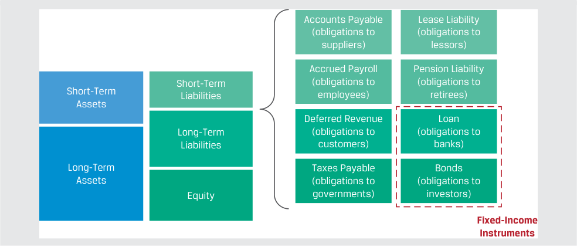
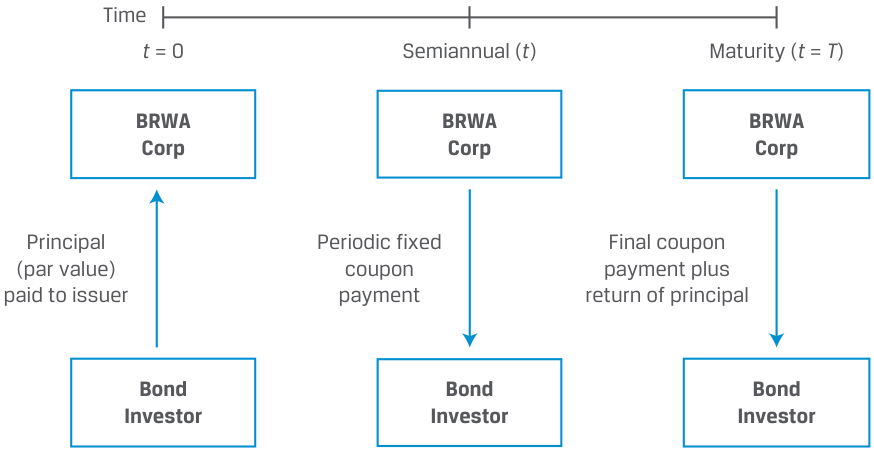
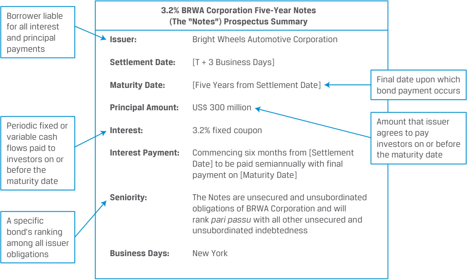
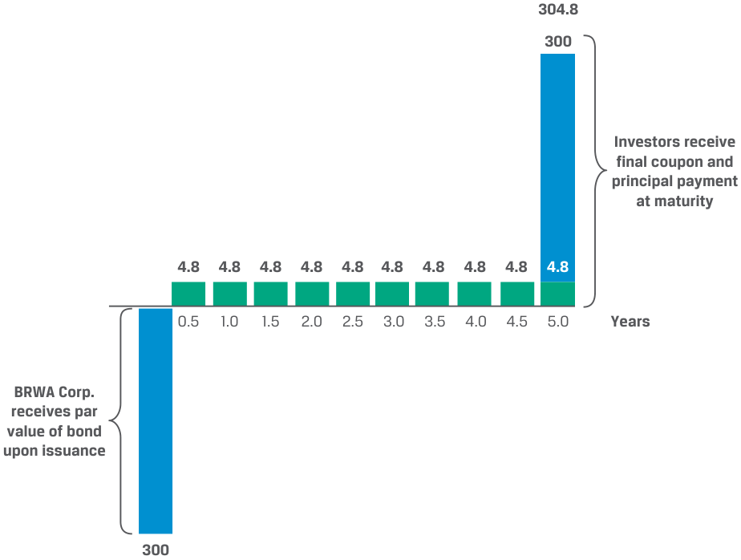
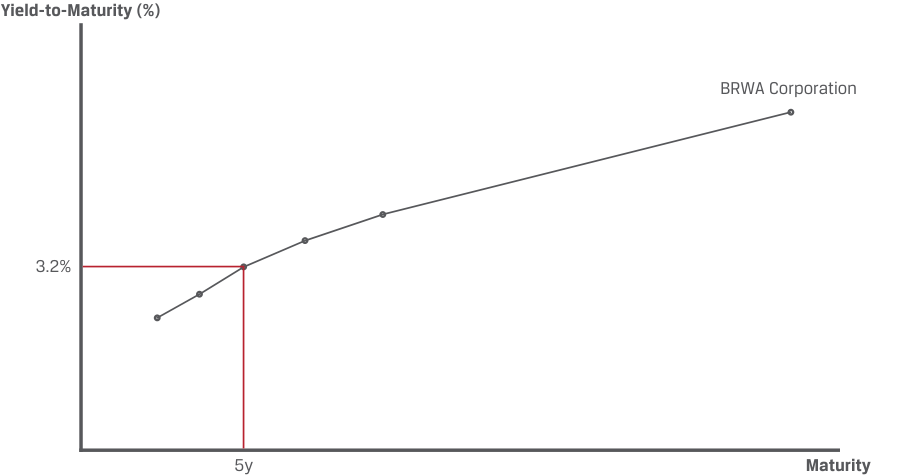
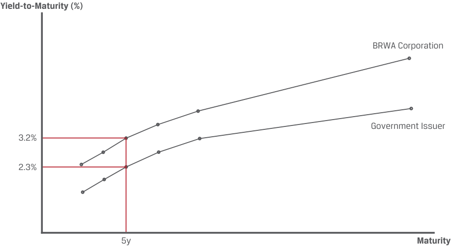

Learning Module 1 Fixed-Income Instrument Features - Part 1: Introduction
Volume 6: Fixed Income
Learning Module 1 Fixed-Income Instrument Features
Part 1/2: Introduction (PDF Pages 13–23)
Tập 6: Chứng Khoán Thu Nhập Cố Định (Fixed Income)
Học Phần 1: Các Đặc Điểm Của Công Cụ Thu Nhập Cố Định (Fixed-Income Instrument Features)
Phần 1/2: Giới Thiệu (Trang PDF 13–23)
L E A R N I N G M O D U L E
H Ọ C P H Ầ N
1
1
Fixed-Income Instrument Features
Các Đặc Điểm Của Công Cụ Thu Nhập Cố Định (Fixed-Income Instrument Features)
LEARNING OUTCOMES
MỤC TIÊU HỌC TẬP (LEARNING OUTCOMES)
Mastery The candidate should be able to: describe the features of a fixed-income security describe the contents of a bond indenture and contrast affirmative and negative covenants
Mức độ thành thạo – Ứng viên cần có khả năng: - Mô tả các đặc điểm của một chứng khoán thu nhập cố định (fixed-income security). - Mô tả nội dung của một khế ước trái phiếu (bond indenture) và phân biệt giữa các điều khoản cam kết khẳng định (affirmative covenants) và các điều khoản cam kết phủ định (negative covenants).
INTRODUCTION
GIỚI THIỆU (INTRODUCTION)
1
1
Fixed-income instruments, such as loans and bonds, are the most common means of financing. Fixed-income issuers include businesses, governments, and not-for-profits that promise to pay interest and repay borrowed principal to investors. Loans are commonly used between an individual or company and a bank. Bonds are more standardized fixed-income instruments designed to be more easily tradeable than loans and are commonly issued by larger companies, governments, and special purpose issuers. Bonds are a core holding for many investors, including mutual funds, pension plans, insurance companies, and central banks. This module introduces the features of fixed-income instruments and the legal contracts that govern them.
Các công cụ thu nhập cố định (fixed-income instruments), chẳng hạn như các khoản vay (loans) và trái phiếu (bonds), là phương thức tài trợ vốn phổ biến nhất. Các tổ chức phát hành thu nhập cố định (fixed-income issuers) bao gồm các doanh nghiệp, chính phủ và các tổ chức phi lợi nhuận cam kết trả lãi (interest) và hoàn trả vốn gốc đã vay (borrowed principal) cho các nhà đầu tư. Các khoản vay thường được sử dụng giữa một cá nhân hoặc công ty và một ngân hàng. Trái phiếu là các công cụ thu nhập cố định được chuẩn hóa cao hơn, được thiết kế để dễ dàng giao dịch hơn so với các khoản vay và thường được phát hành bởi các công ty lớn hơn, các chính phủ và các tổ chức phát hành có mục đích đặc biệt (special purpose issuers). Trái phiếu là một khoản nắm giữ cốt lõi (core holding) đối với nhiều nhà đầu tư, bao gồm các quỹ tương hỗ (mutual funds), các quỹ hưu trí (pension plans), các công ty bảo hiểm (insurance companies) và các ngân hàng trung ương (central banks). Học phần này giới thiệu các đặc điểm của công cụ thu nhập cố định và các hợp đồng pháp lý điều chỉnh chúng.
LEARNING MODULE OVERVIEW
TỔNG QUAN HỌC PHẦN (LEARNING MODULE OVERVIEW)
-
Fixed-income instruments are debt instruments, such as loans and bonds, that represent a contractual agreement under which an issuer borrows money from investors in exchange for interest and future repayment of principal.
-
Key features of fixed-income instruments include the issuer (borrower), time to maturity, principal amount, coupon rate and frequency, seniority, and contingency provisions. These features in turn define the cash flow structure of the instrument.
-
A fixed-income investor (lender) receives a return or yield based on the periodic cash flows paid by the bond issuer and the change in price of the bond. A bond’s price and yield vary inversely with one another.
-
Các công cụ thu nhập cố định (fixed-income instruments) là các công cụ nợ (debt instruments), chẳng hạn như các khoản vay và trái phiếu, đại diện cho một thỏa thuận hợp đồng theo đó tổ chức phát hành vay tiền từ các nhà đầu tư để đổi lấy tiền lãi và việc hoàn trả vốn gốc trong tương lai.
-
Các đặc điểm chính của công cụ thu nhập cố định bao gồm tổ chức phát hành (issuer / bên đi vay), thời gian đáo hạn (time to maturity), mệnh giá gốc (principal amount), lãi suất coupon và tần suất thanh toán (coupon rate and frequency), mức độ ưu tiên trả nợ (seniority) và các điều khoản dự phòng (contingency provisions). Đến lượt mình, các đặc điểm này xác định cấu trúc dòng tiền (cash flow structure) của công cụ đó.
-
Một nhà đầu tư thu nhập cố định (bên cho vay) nhận được tỷ suất sinh lợi (return) hoặc lợi suất (yield) dựa trên các dòng tiền định kỳ được thanh toán bởi tổ chức phát hành trái phiếu và sự thay đổi giá của trái phiếu. Giá trái phiếu (bond’s price) và lợi suất (yield) biến thiên nghịch chiều với nhau.
-
Fixed-income investors are exposed to credit risk, the risk of loss resulting from the issuer failing to make full and timely payments of interest and/or to repay principal. Investors expect to earn the lowest yield on bonds that carry little or no credit risk and expect higher yields on lower-credit-quality instruments.
-
A fixed-income instrument’s credit quality is affected by the underlying source of repayment, its seniority, credit provisions such as collateral backing, and the issuer’s willingness to pay.
-
The legal contract describing the features and other terms of a fixed-income security is known as an indenture.
-
Indentures often contain covenants, or legally enforceable terms, agreed to at the time of issuance. These may either require the bond issuer to take an action or prohibit the issuer from performing some action.
-
Các nhà đầu tư thu nhập cố định phải chịu rủi ro tín dụng (credit risk), tức là rủi ro tổn thất phát sinh từ việc tổ chức phát hành không thực hiện thanh toán lãi đầy đủ và đúng hạn và/hoặc không hoàn trả vốn gốc. Các nhà đầu tư kỳ vọng nhận được lợi suất thấp nhất đối với các trái phiếu có ít hoặc không có rủi ro tín dụng và kỳ vọng lợi suất cao hơn đối với các công cụ có chất lượng tín dụng thấp hơn (lower-credit-quality instruments).
-
Chất lượng tín dụng (credit quality) của một công cụ thu nhập cố định bị ảnh hưởng bởi nguồn trả nợ cơ sở (underlying source of repayment), mức độ ưu tiên trả nợ (seniority), các điều khoản tín dụng như tài sản thế chấp đảm bảo (collateral backing) và thiện chí trả nợ của tổ chức phát hành (issuer’s willingness to pay).
-
Hợp đồng pháp lý mô tả các đặc điểm và các điều khoản khác của một chứng khoán thu nhập cố định được gọi là khế ước trái phiếu (indenture).
-
Các khế ước trái phiếu thường chứa đựng các điều khoản cam kết (covenants), hay các điều khoản có hiệu lực cưỡng chế pháp lý, được thỏa thuận tại thời điểm phát hành. Các điều khoản này có thể yêu cầu tổ chức phát hành trái phiếu thực hiện một hành động hoặc cấm tổ chức phát hành thực hiện một số hành động nhất định.
LEARNING MODULE SELF-ASSESSMENT
TỰ ĐÁNH GIÁ HỌC PHẦN (LEARNING MODULE SELF-ASSESSMENT)
These initial questions are intended to help you gauge your current level of understanding of this learning module.
Những câu hỏi ban đầu này nhằm mục đích giúp bạn tự đánh giá mức độ hiểu biết hiện tại của mình về học phần này.
- The annual coupon amount for a fixed-rate bond is calculated by:
-
A. multiplying its yield by the par value of the bond.
-
B. Multiplying its coupon rate by the price of the bond.
-
C. Multiplying its coupon rate by the par value of the bond.
-
Solution:
- Số tiền coupon hàng năm (annual coupon amount) đối với một trái phiếu lãi suất cố định (fixed-rate bond) được tính bằng cách:
-
A. nhân lợi suất (yield) của nó với mệnh giá (par value) của trái phiếu.
-
B. nhân lãi suất coupon (coupon rate) của nó với giá (price) của trái phiếu.
-
C. nhân lãi suất coupon (coupon rate) của nó với mệnh giá (par value) của trái phiếu.
-
Lời giải:
C is correct. On each interest payment date, a fixed-rate bond issuer pays investors a coupon payment equal to the bond’s coupon rate times its par value. For periods shorter than a year, the annual coupon amount is divided into smaller equal periodic payments. For example, a bond with a par value of 100 and a coupon rate of 6% paid quarterly would pay coupon payments of 0.06 × 100 = 60/4 = 15 four times per year.
C là đáp án đúng. Vào mỗi ngày thanh toán lãi, tổ chức phát hành trái phiếu lãi suất cố định trả cho các nhà đầu tư một khoản thanh toán coupon bằng lãi suất coupon của trái phiếu nhân với mệnh giá (par value) của nó. Đối với các kỳ ngắn hơn một năm, số tiền coupon hàng năm được chia thành các khoản thanh toán định kỳ nhỏ hơn bằng nhau. Ví dụ, một trái phiếu có mệnh giá 100 và lãi suất coupon 6% trả hàng quý sẽ thanh toán các khoản coupon là $0.06 \times 100 = 6.0 / 4 = 1.5$ bốn lần mỗi năm (hoặc với mệnh giá 1,000 thì bằng $0.06 \times 1,000 = 60/4 = 15$ bốn lần mỗi năm).
- Match each bond type in the left column with a description in the right column.
- Hãy ghép mỗi loại trái phiếu ở cột bên trái với mô tả tương ứng ở cột bên phải.
| A. Fixed-coupon bond | I. The difference between its issuance price and par value at maturity represents a cumulative interest pay- ment at maturity. |
|---|---|
| B. Floating-rate note | II. Usually involves uniform payments that occur at monthly,quarterly, semi-annual, or annual intervals. |
| C. Zero-coupon bond | III. Involves interest payments that reset periodically based on market factors. |
| Loại trái phiếu | Mô tả |
|---|---|
| A. Trái phiếu có lãi suất coupon cố định (Fixed-coupon bond) | I. Phần chênh lệch giữa giá phát hành (issuance price) và mệnh giá (par value) khi đáo hạn thể hiện khoản thanh toán lãi tích lũy tại ngày đáo hạn. |
| B. Trái phiếu lãi suất thả nổi (Floating-rate note – FRN) | II. Thường bao gồm các khoản thanh toán đồng nhất diễn ra định kỳ hàng tháng, hàng quý, bán niên hoặc hàng năm. |
| C. Trái phiếu không trả lãi định kỳ (Zero-coupon bond) | III. Bao gồm các khoản thanh toán lãi được thiết lập lại định kỳ (reset periodically) dựa trên các yếu tố thị trường. |
Solution:
Lời giải:
-
A. II is correct. Fixed-coupon bonds usually involve uniform payments that occur at monthly, quarterly, semi-annual, or annual intervals.
-
B. III is correct. Floating-rate notes (FRNs) involve interest payments that reset periodically based on market factors.
-
A. II là đáp án đúng. Trái phiếu có lãi suất coupon cố định (fixed-coupon bonds) thường bao gồm các khoản thanh toán đồng nhất diễn ra định kỳ hàng tháng, hàng quý, bán niên hoặc hàng năm.
-
B. III là đáp án đúng. Trái phiếu lãi suất thả nổi (floating-rate notes – FRNs) bao gồm các khoản thanh toán lãi được thiết lập lại định kỳ dựa trên các yếu tố thị trường.
| C.I is correct. Zero-coupon bonds are typically issued at a discount to par; the difference between the issuance price and par value represents a cumulative interest payment at maturity. |
|---|
| 3. The coupon rate for a floating rate note (FRN) is composed of a market reference rate and: |
| A.a credit rating. |
| B.an issuer-specific spread. |
| i C.The yield on a fixed-rate benchmark bond. Solution: |
| B is correct. An FRN coupon rate comprises a market reference rate (MRR) and an issuer-specific spread that is usually constant and set at the time of issuance, while the MRR resets periodically based on market factors. As the MRR changes, the FRN coupon rate and interest payment change accordingly. |
| A is incorrect. While the issuer’s credit rating may be a determinant of an FRN’s spread over the MRR, a credit rating is a letter-grade assessment of credit risk and is not directly involved in the calculation of the coupon rate. |
| C is incorrect. The yield on a fixed-rate benchmark bond would reflect top- down factors that determine interest rates, such as real growth and expected inflation, which are already considered in the MRR. |
| 4. A sovereign bond is usually a safer investment than a corporate bond of similar maturity issued within a country because: |
| A.corporate bonds are subject to inflation risk. |
| l B.sovereign bonds are backed by taxation and fiscal power of the issuing government. |
| C.sovereign bonds are secured by high-quality collateral, such as prop- erty and equipment. Solution: |
| B is correct. Sovereign bonds are backed by a national government’s taxa- tion and fiscal power and thus usually represent the highest-credit-quality bonds in each geographic market. |
| A is incorrect because sovereign bonds, unless specifically indexed to infla- tion, are also subject to inflation risk. |
| l C is incorrect because sovereign bonds are typically not secured by collat- eral; this is more commonly a feature of corporate bonds and asset-backed securities. |
| 5. Which of the following is the appropriate order of claims in liquidation, by type of bond, in order of highest to lowest? |
| A.Junior, senior secured, senior unsecured |
| B.Senior unsecured, senior secured, junior |
| C.Senior secured, senior unsecured, junior Solution: |
| C is correct. Senior secured debts would be the highest-priority claims to be satisfied. Senior unsecured debts would be the next to receive allocations of the liquidated asset value, and junior debts would be the lowest-priority claims to be satisfied. |
- C. I là đáp án đúng. Trái phiếu không trả lãi định kỳ (zero-coupon bonds) thường được phát hành ở mức chiết khấu so với mệnh giá (discount to par); phần chênh lệch giữa giá phát hành và mệnh giá thể hiện khoản thanh toán lãi tích lũy tại ngày đáo hạn.
- Lãi suất coupon của một trái phiếu lãi suất thả nổi (floating-rate note – FRN) được cấu thành từ một lãi suất tham chiếu thị trường (market reference rate) và: - A. một xếp hạng tín dụng (credit rating). - B. một phần chênh lệch tín dụng đặc thù theo tổ chức phát hành (issuer-specific spread). - C. lợi suất của một trái phiếu chuẩn lãi suất cố định (fixed-rate benchmark bond).
- Lời giải:
B là đáp án đúng. Lãi suất coupon của FRN bao gồm lãi suất tham chiếu thị trường (market reference rate – MRR) và phần chênh lệch đặc thù theo tổ chức phát hành (issuer-specific spread) – phần chênh lệch này thường không đổi và được ấn định tại thời điểm phát hành, trong khi MRR được thiết lập lại định kỳ dựa trên các yếu tố thị trường. Khi MRR thay đổi, lãi suất coupon của FRN và khoản thanh toán lãi sẽ thay đổi tương ứng.
A không đúng. Mặc dù xếp hạng tín dụng của tổ chức phát hành có thể là một yếu tố quyết định mức chênh lệch (spread) của FRN so với MRR, nhưng xếp hạng tín dụng là một đánh giá rủi ro tín dụng bằng chữ cái và không trực tiếp tham gia vào phép tính lãi suất coupon.
C không đúng. Lợi suất của một trái phiếu chuẩn lãi suất cố định phản ánh các yếu tố từ trên xuống (top-down factors) quyết định lãi suất, chẳng hạn như tăng trưởng thực và lạm phát kỳ vọng, vốn đã được tính đến trong MRR.
- Trái phiếu chính phủ (sovereign bond) thường là một khoản đầu tư an toàn hơn so với trái phiếu doanh nghiệp (corporate bond) có cùng kỳ hạn được phát hành trong cùng một quốc gia vì: - A. trái phiếu doanh nghiệp chịu rủi ro lạm phát (inflation risk). - B. trái phiếu chính phủ được đảm bảo bởi quyền đánh thuế và quyền lực tài khóa (taxation and fiscal power) của chính phủ phát hành. - C. trái phiếu chính phủ được đảm bảo bằng tài sản thế chấp chất lượng cao (high-quality collateral), chẳng hạn như bất động sản và thiết bị.
- Lời giải:
B là đáp án đúng. Trái phiếu chính phủ được đảm bảo bởi quyền đánh thuế và quyền lực tài khóa của chính phủ quốc gia và do đó thường đại diện cho các trái phiếu có chất lượng tín dụng cao nhất tại mỗi thị trường địa lý.
A không đúng vì trái phiếu chính phủ, trừ khi được gắn chỉ số cụ thể với lạm phát (indexed to inflation), cũng phải chịu rủi ro lạm phát.
C không đúng vì trái phiếu chính phủ thường không được đảm bảo bằng tài sản thế chấp; đây là đặc điểm phổ biến hơn của trái phiếu doanh nghiệp và chứng khoán đảm bảo bằng tài sản (asset-backed securities).
- Đâu là thứ tự ưu tiên thanh toán phù hợp của các quyền đòi nợ khi thanh lý (order of claims in liquidation), theo loại trái phiếu, theo thứ tự từ cao nhất đến thấp nhất? - A. Nợ thứ cấp (Junior), nợ cấp cao có đảm bảo (senior secured), nợ cấp cao không có đảm bảo (senior unsecured) - B. Nợ cấp cao không có đảm bảo (Senior unsecured), nợ cấp cao có đảm bảo (senior secured), nợ thứ cấp (junior) - C. Nợ cấp cao có đảm bảo (Senior secured), nợ cấp cao không có đảm bảo (senior unsecured), nợ thứ cấp (junior)
- Lời giải:
C là đáp án đúng. Các khoản nợ cấp cao có đảm bảo (senior secured debts) sẽ là các quyền đòi nợ có mức độ ưu tiên cao nhất được đáp ứng. Các khoản nợ cấp cao không có đảm bảo (senior unsecured debts) sẽ là đối tượng tiếp theo nhận được phân bổ giá trị tài sản thanh lý, và các khoản nợ thứ cấp (junior debts) sẽ là các quyền đòi nợ có mức độ ưu tiên thấp nhất được đáp ứng.
- Describe the purpose of a pari passu clause in a bond indenture. Solution:
- Hãy mô tả mục đích của điều khoản ngang quyền (pari passu clause) trong một khế ước trái phiếu (bond indenture).
- Lời giải:
A pari passu (“equal footing”) clause ensures that a debt obligation is treated the same as the borrower’s other senior debt instruments.
Điều khoản pari passu (“ngang hàng” hay “bình đẳng quyền lợi” – “equal footing”) đảm bảo rằng một nghĩa vụ nợ được đối xử ngang bằng như các công cụ nợ cấp cao (senior debt instruments) khác của bên đi vay.
2
2
FEATURES OF FIXED-INCOME SECURITIES
CÁC ĐẶC ĐIỂM CỦA CHỨNG KHOÁN THU NHẬP CỐ ĐỊNH (FEATURES OF FIXED-INCOME SECURITIES)
describe the features of a fixed-income security
Mục tiêu: Mô tả các đặc điểm của một chứng khoán thu nhập cố định.
Fixed-income instruments are debt instruments, such as loans and bonds. Loans are debt instruments formed and governed by a private agreement usually between an individual or company and a financial intermediary, such as a bank. Bonds or fixed-income securities are more standardized contractual agreements between larger issuers and investors. A bond issuer borrows money most often to fund operations or capital expenditures. Bond investors are lenders who provide funds to the issuer in exchange for interest payments and future repayment of principal. While corporate issuers tend to have, at most, one or two types of equity securities outstanding, they often have many types of debt obligations outstanding, each with distinct features, such as time to maturity, seniority, and currency.
Các công cụ thu nhập cố định (fixed-income instruments) là các công cụ nợ, chẳng hạn như các khoản vay và trái phiếu. Các khoản vay (loans) là các công cụ nợ được hình thành và điều chỉnh bởi một thỏa thuận riêng tư (private agreement) thường là giữa một cá nhân hoặc công ty và một định chế tài chính trung gian (financial intermediary), chẳng hạn như một ngân hàng. Trái phiếu (bonds) hay chứng khoán thu nhập cố định (fixed-income securities) là các thỏa thuận hợp đồng được chuẩn hóa cao hơn giữa các tổ chức phát hành quy mô lớn hơn và các nhà đầu tư. Một tổ chức phát hành trái phiếu thường vay tiền nhất để tài trợ cho hoạt động kinh doanh (operations) hoặc chi tiêu vốn (capital expenditures). Các nhà đầu tư trái phiếu là những người cho vay cung cấp vốn cho tổ chức phát hành để đổi lấy các khoản thanh toán lãi và việc hoàn trả vốn gốc trong tương lai. Trong khi các tổ chức phát hành doanh nghiệp thường chỉ có tối đa một hoặc hai loại chứng khoán vốn cổ phần (equity securities) đang lưu hành, họ thường có nhiều loại nghĩa vụ nợ đang lưu hành, mỗi loại có những đặc điểm riêng biệt, chẳng hạn như thời gian đáo hạn (time to maturity), mức độ ưu tiên trả nợ (seniority) và đồng tiền định danh (currency).
WHICH LIABILITIES ARE FIXED-INCOME INSTRUMENTS?
NHỮNG KHOẢN NỢ PHẢI TRẢ NÀO LÀ CÔNG CỤ THU NHẬP CỐ ĐỊNH? (WHICH LIABILITIES ARE FIXED-INCOME INSTRUMENTS?)
Earlier modules in corporate issuers and financial statement analysis discussed the balance sheets of corporate issuers composed of assets and the liabilities and equity that finance them. Liabilities are broadly defined by accounting standards as present obligations to transfer economic resources as a result of past events. This definition encompasses many types of obligations, including amounts that an issuer owes to suppliers, customers, employees, governments, retirees, lessors, and so on.
Các học phần trước trong môn Tổ chức phát hành doanh nghiệp (Corporate Issuers) và Phân tích báo cáo tài chính (Financial Statement Analysis) đã thảo luận về bảng cân đối kế toán của các tổ chức phát hành doanh nghiệp bao gồm tài sản (assets) cùng với nợ phải trả (liabilities) và vốn chủ sở hữu (equity) tài trợ cho chúng. Nợ phải trả được các chuẩn mực kế toán định nghĩa rộng là các nghĩa vụ hiện tại phải chuyển giao các nguồn lực kinh tế như là kết quả của các sự kiện trong quá khứ. Định nghĩa này bao hàm nhiều loại nghĩa vụ, bao gồm các khoản tiền mà tổ chức phát hành nợ các nhà cung cấp, khách hàng, người lao động, chính phủ, người nghỉ hưu, bên cho thuê tài sản, v.v.
Not all liabilities are fixed-income instruments (or “debt”), but all fixed-income instruments are liabilities. In these modules on fixed income, from the perspective of a corporate issuer, we are focused only on loans and bonds: instruments that can be settled in cash and for which the counterparty is an investor or a bank. Other liabilities, particularly leases and pension obligations, share some characteristics with fixed-income instruments but are outside the scope of these modules.
Không phải tất cả các khoản nợ phải trả đều là công cụ thu nhập cố định (hay “nợ vay” – “debt”), nhưng tất cả các công cụ thu nhập cố định đều là nợ phải trả. Trong các học phần về chứng khoán thu nhập cố định này, dưới góc độ của một tổ chức phát hành doanh nghiệp, chúng ta chỉ tập trung vào các khoản vay (loans) và trái phiếu (bonds): những công cụ có thể được thanh toán bằng tiền mặt và có đối tác (counterparty) là một nhà đầu tư hoặc một ngân hàng. Các khoản nợ phải trả khác, đặc biệt là nợ thuê tài sản (leases) và nghĩa vụ hưu trí (pension obligations), có chung một số đặc điểm với các công cụ thu nhập cố định nhưng nằm ngoài phạm vi của các học phần này.

Chú thích hình ảnh: - Bảng cân đối kế toán: Tài sản ngắn hạn (Short-Term Assets) & Tài sản dài hạn (Long-Term Assets) đối ứng với Nợ ngắn hạn (Short-Term Liabilities), Nợ dài hạn (Long-Term Liabilities) và Vốn chủ sở hữu (Equity). - Các khoản nợ phải trả thông thường: Phải trả người bán (Accounts Payable – nghĩa vụ với nhà cung cấp), Lương phải trả (Accrued Payroll – nghĩa vụ với nhân viên), Doanh thu chưa thực hiện (Deferred Revenue – nghĩa vụ với khách hàng), Thuế phải nộp (Taxes Payable – nghĩa vụ với chính phủ), Nợ thuê (Lease Liability – nghĩa vụ với bên cho thuê), Nợ hưu trí (Pension Liability – nghĩa vụ với người nghỉ hưu). - Công cụ thu nhập cố định (Fixed-Income Instruments): Khoản vay (Loan – nghĩa vụ với ngân hàng) và Trái phiếu (Bonds – nghĩa vụ với nhà đầu tư).
Note that government issuers tend to be financed by bonds, not by loans, though some exceptions exist—for example, loans from supranational organizations such as the International Monetary Fund (IMF).
Lưu ý rằng các tổ chức phát hành chính phủ có xu hướng được tài trợ bằng trái phiếu chứ không phải bằng các khoản vay, mặc dù vẫn tồn tại một số ngoại lệ — ví dụ, các khoản vay từ các tổ chức siêu quốc gia (supranational organizations) như Quỹ Tiền tệ Quốc tế (IMF).
The committed periodic cash flows of a bond distinguish it from equity securities. Exhibit 1 shows the cash flows of a fixed-rate bond issued by Bright Wheels Automotive (BRWA) Corporation.
Các dòng tiền định kỳ được cam kết (committed periodic cash flows) của một trái phiếu giúp phân biệt nó với các chứng khoán vốn cổ phần. Bảng minh họa 1 (Exhibit 1) cho thấy các dòng tiền của một trái phiếu lãi suất cố định được phát hành bởi Tập đoàn Bright Wheels Automotive (BRWA).
Exhibit 1: BRWA Corporation Bond Cash Flows
Bảng minh họa 1: Dòng tiền trái phiếu của Tập đoàn BRWA (BRWA Corporation Bond Cash Flows)

Chú thích hình ảnh: - Thời điểm $t = 0$: Nhà đầu tư trái phiếu (Bond Investor) thanh toán Vốn gốc / Mệnh giá (Principal / par value) cho Tập đoàn BRWA (BRWA Corp). - Định kỳ bán niên ($t$): Tập đoàn BRWA thanh toán khoản lãi coupon cố định định kỳ (Periodic fixed coupon payment) cho Nhà đầu tư trái phiếu. - Khi đáo hạn ($t = T$): Tập đoàn BRWA thanh toán khoản lãi coupon cuối cùng cộng với việc hoàn trả vốn gốc (Final coupon payment plus return of principal) cho Nhà đầu tư trái phiếu.
At issuance, investors purchased the BRWA bond in exchange for cash equal to the bond principal or the amount borrowed, which is also referred to as the bond’s par value . On each interest payment date, BRWA commits to pay bond investors an interest or coupon payment equal to the coupon rate times the par value of the bond. For periods shorter than a year, the annual coupon amount is divided into smaller equal periodic payments. On the bond’s maturity date, BRWA pays the final fixed coupon and the principal amount to investors.
Tại thời điểm phát hành, các nhà đầu tư đã mua trái phiếu BRWA để đổi lấy tiền mặt bằng với vốn gốc (principal) của trái phiếu hay số tiền đã vay, vốn cũng được gọi là mệnh giá (par value) của trái phiếu. Vào mỗi ngày thanh toán lãi, BRWA cam kết trả cho các nhà đầu tư trái phiếu một khoản thanh toán lãi hay coupon bằng lãi suất coupon nhân với mệnh giá của trái phiếu. Đối với các kỳ ngắn hơn một năm, số tiền coupon hàng năm được chia thành các khoản thanh toán định kỳ nhỏ hơn bằng nhau. Vào ngày đáo hạn (maturity date) của trái phiếu, BRWA thanh toán khoản coupon cố định cuối cùng và số tiền vốn gốc cho các nhà đầu tư.
The key features of each bond issue are usually summarized in a prospectus. Exhibit 2 outlines the terms of BRWA Corporation’s bond issue.
Các đặc điểm chính của mỗi đợt phát hành trái phiếu thường được tóm tắt trong một bản cáo bạch (prospectus). Bảng minh họa 2 (Exhibit 2) phác thảo các điều khoản của đợt phát hành trái phiếu của Tập đoàn BRWA.
Exhibit 2: BRWA Corporation Bond: Brief Summary of Terms
Bảng minh họa 2: Trái phiếu Tập đoàn BRWA: Tóm tắt ngắn gọn các điều khoản (BRWA Corporation Bond: Brief Summary of Terms)

Chú thích hình ảnh: Tóm tắt Bản cáo bạch Trái phiếu kỳ hạn 5 năm lãi suất 3.2% của Tập đoàn BRWA (Gọi tắt là “Trái phiếu” – The “Notes”) - Tổ chức phát hành (Issuer): Bright Wheels Automotive Corporation (Bên đi vay chịu trách nhiệm cho mọi khoản thanh toán lãi và gốc). - Ngày thanh toán giao dịch (Settlement Date): $[T + 3\text{ Ngày làm việc}]$. - Ngày đáo hạn (Maturity Date): $[\text{5 năm kể từ Ngày thanh toán giao dịch}]$ (Ngày cuối cùng mà khoản thanh toán trái phiếu diễn ra). - Mệnh giá gốc (Principal Amount): $300\text{ triệu USD}$ (Số tiền mà tổ chức phát hành đồng ý trả cho nhà đầu tư vào hoặc trước ngày đáo hạn). - Tiền lãi (Interest): Lãi suất coupon cố định $3.2\%$. - Thanh toán lãi (Interest Payment): Bắt đầu 6 tháng kể từ $[\text{Ngày thanh toán giao dịch}]$, được trả bán niên với khoản thanh toán cuối cùng vào $[\text{Ngày đáo hạn}]$ (Các dòng tiền cố định hoặc biến đổi định kỳ trả cho nhà đầu tư vào hoặc trước ngày đáo hạn). - Mức độ ưu tiên trả nợ (Seniority): Trái phiếu là các nghĩa vụ không có đảm bảo (unsecured) và không phải nợ thứ cấp (unsubordinated) của Tập đoàn BRWA và sẽ xếp ngang hàng (rank pari passu) với tất cả các khoản nợ không có đảm bảo và không phải nợ thứ cấp khác (Thứ hạng của một trái phiếu cụ thể trong tổng số các nghĩa vụ của tổ chức phát hành). - Ngày làm việc (Business Days): New York.
Key bond features include the issuer, time to maturity, principal amount, coupon rate and frequency, seniority, and contingency provisions.
Các đặc điểm chính của trái phiếu bao gồm tổ chức phát hành (issuer), thời gian đáo hạn (time to maturity), mệnh giá gốc (principal amount), lãi suất coupon và tần suất thanh toán (coupon rate and frequency), mức độ ưu tiên trả nợ (seniority) và các điều khoản dự phòng (contingency provisions).
Issuer
Tổ chức phát hành (Issuer)
A bond issuer can be any legal entity and is liable for all interest and principal payments. Government sector issuers include national (also termed sovereign) or local governments, supranational organizations (such as the World Bank), and quasi-government entities (agencies owned or sponsored by governments, such as postal services or national railways). Because sovereign bonds are backed by the taxation and fiscal power of the issuing government, they usually represent the lowest-credit-risk bond in each region. Private sector issuers include corporate issuers and special purpose entities created to take ownership in such assets as loans or receivables, financed by asset-backed securities (ABS) issued to investors, which will be discussed in detail in later lessons.
Tổ chức phát hành trái phiếu có thể là bất kỳ thực thể pháp lý nào và chịu trách nhiệm đối với tất cả các khoản thanh toán lãi và vốn gốc. Các tổ chức phát hành khu vực chính phủ (government sector issuers) bao gồm chính phủ quốc gia (còn gọi là chính phủ có chủ quyền – sovereign) hoặc chính quyền địa phương (local governments), các tổ chức siêu quốc gia (supranational organizations, chẳng hạn như Ngân hàng Thế giới – World Bank), và các thực thể bán chính phủ (quasi-government entities – các cơ quan thuộc sở hữu hoặc được bảo trợ bởi chính phủ, chẳng hạn như dịch vụ bưu chính hoặc đường sắt quốc gia). Bởi vì trái phiếu chính phủ (sovereign bonds) được đảm bảo bởi quyền đánh thuế và quyền lực tài khóa của chính phủ phát hành, chúng thường đại diện cho trái phiếu có rủi ro tín dụng thấp nhất ở mỗi khu vực. Các tổ chức phát hành khu vực tư nhân (private sector issuers) bao gồm các tổ chức phát hành doanh nghiệp và các thực thể có mục đích đặc biệt (special purpose entities – SPEs) được thành lập để nắm quyền sở hữu đối với các tài sản như các khoản vay hoặc các khoản phải thu, được tài trợ bằng chứng khoán đảm bảo bằng tài sản (asset-backed securities – ABS) phát hành cho các nhà đầu tư, nội dung này sẽ được thảo luận chi tiết trong các bài học sau.
Maturity
Kỳ hạn / Ngày đáo hạn (Maturity)
A bond’s maturity is the date of the final payment the issuer makes to investors, and the tenor refers to the remaining time to maturity. Fixed-income securities with a tenor one year or less at issuance are known as money market securities , examples of which include government Treasury bills and commercial paper issued by corporations. Bonds with tenors longer than one year at issuance are called capital market securities . Perpetual bonds are a less common bond type with no stated maturity. Public sector entities were the first issuers of perpetual bonds, and current examples include local governments and local authorities, as well as certain bonds issued by banks to meet regulatory capital requirements. Perpetual bonds are still distinct from equities, however, in that they have contractually defined cash flows, no voting rights, and greater seniority in the capital structure.
Ngày đáo hạn (maturity) của một trái phiếu là ngày diễn ra khoản thanh toán cuối cùng mà tổ chức phát hành thực hiện cho các nhà đầu tư, và kỳ hạn còn lại (tenor) đề cập đến khoảng thời gian còn lại cho đến khi đáo hạn. Các chứng khoán thu nhập cố định có kỳ hạn từ một năm trở xuống tại thời điểm phát hành được gọi là chứng khoán thị trường tiền tệ (money market securities), ví dụ bao gồm tín phiếu Kho bạc chính phủ (government Treasury bills) và thương phiếu (commercial paper) do các tập đoàn phát hành. Các trái phiếu có kỳ hạn dài hơn một năm tại thời điểm phát hành được gọi là chứng khoán thị trường vốn (capital market securities). Trái phiếu vĩnh cửu (perpetual bonds) là một loại trái phiếu ít phổ biến hơn không có ngày đáo hạn xác định (no stated maturity). Các thực thể khu vực công là những tổ chức phát hành trái phiếu vĩnh cửu đầu tiên, và các ví dụ hiện tại bao gồm chính quyền địa phương và các cơ quan quản lý địa phương, cũng như một số trái phiếu do các ngân hàng phát hành để đáp ứng các yêu cầu về vốn theo quy định pháp lý (regulatory capital requirements). Tuy nhiên, trái phiếu vĩnh cửu vẫn khác biệt với cổ phiếu ở chỗ chúng có các dòng tiền được xác định theo hợp đồng, không có quyền biểu quyết (no voting rights), và có mức độ ưu tiên trả nợ cao hơn trong cấu trúc vốn (capital structure).
AIRPORT AUTHORITY HONG KONG’S PERPETUAL BONDS
TRÁI PHIẾU VĨNH CỬU CỦA CƠ QUAN QUẢN LÝ SÂN BAY HỒNG KÔNG (AIRPORT AUTHORITY HONG KONG’S PERPETUAL BONDS)
Airport Authority Hong Kong (AAHK) is a statutory body responsible for operating and developing Hong Kong International Airport, one of the world’s busiest cargo airports and a major passenger hub connecting to over 200 global destinations. In late 2020, following a sharp decline in passenger volume during the COVID-19 pandemic, AAHK announced a two-part, USD1.5 billion perpetual bond issue to fund construction of a third runway and for general corporate purposes. Asian and European investors demonstrated confidence in the airport’s recovery of passenger volume, placing orders totaling more than 10× the offer amount.
Cơ quan Quản lý Sân bay Hồng Kông (AAHK) là một cơ quan theo luật định chịu trách nhiệm vận hành và phát triển Sân bay Quốc tế Hồng Kông, một trong những sân bay hàng hóa bận rộn nhất thế giới và là một trung tâm hành khách lớn kết nối với hơn 200 điểm đến toàn cầu. Vào cuối năm 2020, sau sự sụt giảm mạnh về lưu lượng hành khách trong đại dịch COVID-19, AAHK đã công bố đợt phát hành trái phiếu vĩnh cửu gồm hai phần trị giá 1.5 tỷ USD để tài trợ cho việc xây dựng đường băng thứ ba và cho các mục đích chung của doanh nghiệp. Các nhà đầu tư châu Á và châu Âu đã thể hiện sự tin tưởng vào sự phục hồi lưu lượng hành khách của sân bay, đặt lệnh mua với tổng giá trị gấp hơn 10 lần quy mô chào bán.
Principal (Par or Face Value)
Vốn gốc (Mệnh giá – Principal / Par or Face Value)
The principal, par value, or face value is the amount an issuer agrees to repay to investors at maturity. In the BRWA Corporation example, the principal amount of USD300 million is repaid at maturity, which is five years from issuance. Certain instruments may repay the principal in equal or variable increments over time. A common example is a mortgage loan, for which borrowers make a monthly payment composed of both principal repayment and interest. The principal is repaid over time and not in a lump sum at maturity.
Vốn gốc (principal), mệnh giá (par value), hay giá trị bề mặt (face value) là số tiền mà một tổ chức phát hành đồng ý hoàn trả cho các nhà đầu tư khi đáo hạn. Trong ví dụ về Tập đoàn BRWA, số tiền vốn gốc 300 triệu USD được hoàn trả khi đáo hạn, tức là năm năm kể từ khi phát hành. Một số công cụ nhất định có thể hoàn trả vốn gốc theo các phần bằng nhau hoặc biến đổi theo thời gian. Một ví dụ phổ biến là khoản vay thế chấp (mortgage loan), theo đó người đi vay thực hiện khoản thanh toán hàng tháng bao gồm cả việc hoàn trả vốn gốc và tiền lãi. Vốn gốc được hoàn trả dần theo thời gian chứ không phải trả một lần (lump sum) khi đáo hạn.
Coupon Rate and Frequency
Lãi suất coupon và Tần suất thanh toán (Coupon Rate and Frequency)
A bond’s interest can be paid as
Tiền lãi của một trái phiếu có thể được thanh toán dưới dạng:
-
a fixed coupon paid on specified dates,
-
a variable coupon determined and paid on specified dates, or
-
part of a single payment with the principal at maturity.
-
một khoản coupon cố định (fixed coupon) được trả vào các ngày xác định,
-
một khoản coupon biến đổi (variable coupon) được xác định và trả vào các ngày xác định, hoặc
-
một phần của khoản thanh toán duy nhất cùng với vốn gốc khi đáo hạn.
Fixed-coupon bond payments usually involve uniform payments at monthly, quarterly, semi-annual, or annual intervals. Corporate bonds tend to pay semiannually.
Các khoản thanh toán của trái phiếu có lãi suất coupon cố định thường bao gồm các khoản thanh toán đồng nhất theo định kỳ hàng tháng, hàng quý, bán niên hoặc hàng năm. Trái phiếu doanh nghiệp có xu hướng trả lãi bán niên (nửa năm một lần).
Bonds with variable interest payments are called floating-rate notes (FRNs). An FRN coupon is determined as a combination of a market reference rate (MRR) and an issuer-specific spread referred to as the credit spread . The MRR is a standard borrowing or lending rate for issuers with the highest creditworthiness or lowest default risk for different currencies and maturities. MRRs were historically determined by a poll of lenders (Libor) but transitioned to an average of observed market transaction rates.
Các trái phiếu có khoản thanh toán lãi biến đổi được gọi là trái phiếu lãi suất thả nổi (floating-rate notes – FRNs). Khoản coupon của một FRN được xác định bằng sự kết hợp giữa một lãi suất tham chiếu thị trường (market reference rate – MRR) và một phần chênh lệch đặc thù theo tổ chức phát hành được gọi là chênh lệch tín dụng (credit spread). MRR là mức lãi suất đi vay hoặc cho vay tiêu chuẩn đối với các tổ chức phát hành có mức độ tín nhiệm cao nhất (highest creditworthiness) hoặc rủi ro vỡ nợ thấp nhất đối với các đồng tiền và kỳ hạn khác nhau. Trước đây, các mức MRR được xác định thông qua cuộc khảo sát các bên cho vay (Libor) nhưng đã chuyển đổi sang mức trung bình của các lãi suất giao dịch quan sát được trên thị trường.
The credit spread is set at the time of FRN issuance, is usually constant over the bond’s life, and is expressed in basis points (bps), or hundredths of a percentage point. The higher an issuer’s credit quality, the lower the spread. In contrast, the MRR resets periodically throughout the bond’s life based on market factors. As the MRR changes, the FRN coupon rate and interest payment change accordingly.
Chênh lệch tín dụng (credit spread) được ấn định tại thời điểm phát hành FRN, thường không đổi trong suốt vòng đời của trái phiếu và được biểu thị bằng điểm cơ bản (basis points – bps), hay một phần trăm của một điểm phần trăm ($1\text{ bp} = 0.01\%$). Chất lượng tín dụng của tổ chức phát hành càng cao thì mức chênh lệch càng thấp. Ngược lại, MRR được thiết lập lại định kỳ trong suốt vòng đời của trái phiếu dựa trên các yếu tố thị trường. Khi MRR thay đổi, lãi suất coupon và khoản thanh toán lãi của FRN sẽ thay đổi tương ứng.
Bonds that do not pay periodic interest and instead pay interest as part of a single payment with principal at maturity are termed zero-coupon bonds or pure discount bonds . Zero-coupon bonds are typically issued at a discount to par; the difference between the issuance price and par value represents a cumulative interest payment at maturity.
Các trái phiếu không trả lãi định kỳ và thay vào đó trả lãi như một phần của khoản thanh toán duy nhất cùng với vốn gốc khi đáo hạn được gọi là trái phiếu không trả lãi định kỳ (zero-coupon bonds) hay trái phiếu chiết khấu thuần túy (pure discount bonds). Trái phiếu không trả lãi định kỳ thường được phát hành ở mức chiết khấu so với mệnh giá; phần chênh lệch giữa giá phát hành và mệnh giá thể hiện khoản thanh toán lãi tích lũy tại ngày đáo hạn.
Seniority
Mức độ ưu tiên trả nợ (Seniority)
A debt issue’s seniority or priority of repayment among all issuer obligations is an important determinant of risk. Senior debt has priority over other debt claims in the case of bankruptcy or liquidation. Junior debt , or subordinated debt , claims have a lower priority than senior debt and are paid only once senior claims are satisfied. The BRWA Corporation bonds are senior debt and would be repaid before any BRWA subordinated debt in the event of bankruptcy.
Mức độ ưu tiên trả nợ (seniority) hay thứ tự ưu tiên hoàn trả của một đợt phát hành nợ trong tổng số các nghĩa vụ của tổ chức phát hành là một yếu tố quan trọng quyết định rủi ro. Nợ cấp cao (senior debt) có quyền ưu tiên hơn so với các quyền đòi nợ khác trong trường hợp phá sản hoặc thanh lý. Các quyền đòi nợ của nợ thứ cấp (junior debt hoặc subordinated debt) có mức độ ưu tiên thấp hơn nợ cấp cao và chỉ được thanh toán sau khi các quyền đòi nợ cấp cao đã được đáp ứng. Trái phiếu của Tập đoàn BRWA là nợ cấp cao và sẽ được hoàn trả trước bất kỳ khoản nợ thứ cấp nào của BRWA trong trường hợp phá sản.
Contingency Provisions
Các điều khoản dự phòng (Contingency Provisions)
A contingency provision is a clause in a legal agreement that allows for an action if an event or circumstance occurs. The most common contingency provision for bonds involves embedded options —specifically, call, put, and conversion to equity options. These resemble option contracts but cannot be traded separately from the bond itself. However, the value of these embedded options may be established by comparing the value of a bond with a contingency provision with that of an otherwise similar standard bond from the same issuer. The BRWA bond does not contain any contingency provisions, but this feature will be explored in depth in later lessons.
Một điều khoản dự phòng (contingency provision) là một điều khoản trong thỏa thuận pháp lý cho phép thực hiện một hành động nếu một sự kiện hoặc hoàn cảnh nào đó xảy ra. Điều khoản dự phòng phổ biến nhất đối với trái phiếu liên quan đến các quyền chọn đi kèm (embedded options) — cụ thể là quyền chọn mua lại (call option), quyền chọn bán lại (put option), và quyền chọn chuyển đổi thành cổ phiếu (conversion to equity option). Những quyền chọn này giống như các hợp đồng quyền chọn nhưng không thể được giao dịch tách biệt khỏi bản thân trái phiếu đó. Tuy nhiên, giá trị của các quyền chọn đi kèm này có thể được xác lập bằng cách so sánh giá trị của một trái phiếu có điều khoản dự phòng với giá trị của một trái phiếu tiêu chuẩn tương tự về mọi mặt khác từ cùng một tổ chức phát hành. Trái phiếu BRWA không chứa bất kỳ điều khoản dự phòng nào, nhưng đặc điểm này sẽ được khám phá sâu hơn trong các bài học sau.
We can use the features of a bond issue to model its cash flows. Exhibit 3 illustrates the cash flows over the life of the five-year, fixed-coupon BRWA Corporation bond described earlier.
Chúng ta có thể sử dụng các đặc điểm của một đợt phát hành trái phiếu để mô hình hóa các dòng tiền của nó. Bảng minh họa 3 (Exhibit 3) minh họa các dòng tiền trong suốt vòng đời của trái phiếu Tập đoàn BRWA kỳ hạn 5 năm, lãi suất coupon cố định đã được mô tả trước đó.
Exhibit 3: BRWA Corporation Bond Cash Flows
Bảng minh họa 3: Dòng tiền trái phiếu của Tập đoàn BRWA (BRWA Corporation Bond Cash Flows)

Chú thích hình ảnh: - Thời điểm $0$: Tập đoàn BRWA nhận mệnh giá trái phiếu khi phát hành: $-300$ (triệu USD từ góc độ nhà đầu tư chi tiền / $+300$ triệu USD BRWA nhận về). - Các kỳ bán niên $0.5, 1.0, 1.5, 2.0, 2.5, 3.0, 3.5, 4.0, 4.5\text{ năm}$: Nhà đầu tư nhận khoản thanh toán lãi coupon $4.8$ triệu USD mỗi nửa năm. - Tại thời điểm đáo hạn $5.0\text{ năm}$: Nhà đầu tư nhận khoản thanh toán coupon cuối cùng ($4.8$) và khoản thanh toán vốn gốc ($300$) khi đáo hạn, tổng cộng là $304.8$ triệu USD.
At the time of issuance, investors purchase the bond and pay cash to BRWA Corporation equal to the USD300 million in par value. BRWA investors receive periodic interest payments as follows:
Tại thời điểm phát hành, các nhà đầu tư mua trái phiếu và trả tiền mặt cho Tập đoàn BRWA bằng với 300 triệu USD mệnh giá. Các nhà đầu tư BRWA nhận được các khoản thanh toán lãi định kỳ như sau:
Annual interest expense = Bond par value × Coupon rate.
Annual interest expense = USD300,000,000 × 3.2%.
Annual interest expense = USD9,600,000.
Semiannual interest expense = USD9,600,000/2 = USD4,800,000.
At the end of the fifth year on the maturity date, BRWA Corporation pays investors the final semiannual coupon payment plus the par value of USD300 million for a total of USD304.8 million.
Vào cuối năm thứ năm tại ngày đáo hạn, Tập đoàn BRWA trả cho các nhà đầu tư khoản thanh toán coupon bán niên cuối cùng cộng với mệnh giá 300 triệu USD, tổng cộng là 304.8 triệu USD.
Yield Measures
Các thước đo lợi suất (Yield Measures)
Given a bond’s expected cash flows and its price, return or yield measures can be calculated. One simple measure is the current yield (CY), equal to the bond’s annual coupon divided by the bond’s price and expressed as a percentage. For example, if the five-year BRWA bond were trading at a price of USD101 per USD100 in face value at time t , its current yield would be
Khi biết các dòng tiền kỳ vọng của một trái phiếu và giá của nó, ta có thể tính toán các thước đo tỷ suất sinh lợi hoặc lợi suất. Một thước đo đơn giản là lợi suất hiện hành (current yield – CY), bằng tiền lãi coupon hàng năm của trái phiếu chia cho giá của trái phiếu và được biểu thị dưới dạng phần trăm. Ví dụ, nếu trái phiếu BRWA kỳ hạn 5 năm đang được giao dịch ở mức giá 101 USD trên mỗi 100 USD mệnh giá tại thời điểm $t$, lợi suất hiện hành của nó sẽ là:
CY t = Annual coupon t /Bond price t = 3.2%/1.01 = 3.168%.
The current yield is analogous to the dividend yield for an equity security.
Lợi suất hiện hành tương tự như tỷ suất cổ tức (dividend yield) đối với một chứng khoán vốn cổ phần.
A more complex but far more common yield measure is the yield-to-maturity (YTM), which is the internal rate of return (IRR) calculated using the bond’s price and its expected cash flows to maturity. YTM is usually quoted as an annual rate. An investor’s rate of return on a bond will equal the bond’s YTM at the time of purchase as long as the investor
Một thước đo lợi suất phức tạp hơn nhưng phổ biến hơn nhiều là lợi suất đáo hạn (yield-to-maturity – YTM), tức là tỷ suất hoàn vốn nội bộ (internal rate of return – IRR) được tính bằng cách sử dụng giá của trái phiếu và các dòng tiền kỳ vọng của nó cho đến khi đáo hạn. YTM thường được yết giá theo lãi suất năm. Tỷ suất sinh lợi của một nhà đầu tư trên một trái phiếu sẽ bằng với YTM của trái phiếu tại thời điểm mua miễn là nhà đầu tư đó:
1. receives all promised interest and principal payments as scheduled (i.e., no default),
1. nhận được tất cả các khoản thanh toán lãi và vốn gốc đã cam kết theo đúng lịch trình (tức là không có vỡ nợ),
2. holds the bond until maturity, and
2. nắm giữ trái phiếu cho đến khi đáo hạn, và
3. reinvests all periodic cash flows at the YTM.
3. tái đầu tư tất cả các dòng tiền định kỳ ở mức lãi suất bằng YTM.
Notice that these are the same IRR assumptions discussed in earlier modules. If any of these assumptions do not hold, the investor’s rate of return on the bond investment will differ from the YTM. If the five-year BRWA bond were trading at a price of USD101 per USD100 in face value immediately after issuance, its YTM is the rate, r , in the following equation (recall that the 3.2% coupon is paid semiannually, or 1.6 in each of 10 periods per USD100 in face value):
Lưu ý rằng đây cũng chính là các giả định của IRR đã được thảo luận trong các học phần trước. Nếu bất kỳ giả định nào trong số này không được thỏa mãn, tỷ suất sinh lợi thực tế của nhà đầu tư trên khoản đầu tư trái phiếu sẽ khác với YTM. Nếu trái phiếu BRWA kỳ hạn 5 năm được giao dịch ở mức giá 101 USD trên mỗi 100 USD mệnh giá ngay sau khi phát hành, YTM của nó là mức lãi suất $r$ trong phương trình sau (hãy nhớ rằng lãi suất coupon 3.2% được trả bán niên, tức là 1.6 trong mỗi kỳ của 10 kỳ trên mỗi 100 USD mệnh giá):
101 = 1.6/(1 + r)1 + 1.6/(1 + r)2 + . . . + 101.6/(1 + r)10 .
r = 1.49% on a semiannual basis, or 1.49% × 2 = 2.98% annualized.
$r = 1.49\%$ trên cơ sở bán niên, hoặc $1.49\% \times 2 = 2.98\%$ quy đổi theo năm (annualized).
The YTM calculation is covered in depth in later modules.
Cách tính YTM sẽ được trình bày sâu hơn trong các học phần sau.
Yield Curves
Đường cong lợi suất (Yield Curves)
Most fixed-income issuers have many debt instruments outstanding. A useful way of evaluating the YTM on one issue is to graph all an issuer’s debt instruments with identical features by their YTM and times to maturity. This graphical depiction results in a yield curve . BRWA has six bond issues outstanding, shown in Exhibit 4. The 3.2%, five-year bond is the third point from the left.
Hầu hết các tổ chức phát hành thu nhập cố định đều có nhiều công cụ nợ đang lưu hành. Một cách hữu ích để đánh giá YTM của một đợt phát hành là vẽ đồ thị tất cả các công cụ nợ có đặc điểm giống hệt nhau của một tổ chức phát hành theo YTM và thời gian đáo hạn của chúng. Sự mô tả bằng đồ thị này tạo ra một đường cong lợi suất (yield curve). BRWA có sáu đợt phát hành trái phiếu đang lưu hành, được hiển thị trong Bảng minh họa 4 (Exhibit 4). Trái phiếu kỳ hạn 5 năm có lãi suất 3.2% là điểm thứ ba tính từ bên trái.
Exhibit 4: BRWA Corporation Bond Yield Curve
Bảng minh họa 4: Đường cong lợi suất trái phiếu của Tập đoàn BRWA (BRWA Corporation Bond Yield Curve)

Chú thích hình ảnh: - Trục tung: Lợi suất đáo hạn (Yield-to-Maturity – %). - Trục hoành: Kỳ hạn đáo hạn (Maturity), điểm thứ ba từ trái sang là kỳ hạn 5 năm (5y) ứng với mức lợi suất $3.2\%$ trên đường cong lợi suất của Tập đoàn BRWA (BRWA Corporation).
In this example, the BRWA bonds with longer maturities have higher YTMs, indicating that investors are demanding higher expected returns to compensate for higher risk associated with longer-maturity bonds of the same issuer. A way to measure the credit risk (one type of investment risk of fixed-income securities) for a bond is to compare an issuer’s yield curve to that of comparable sovereign bonds, which have little or no credit risk. Exhibit 5 shows the yield curve for BRWA bonds versus the yield curve for comparable sovereign bonds in the United States, which are US Treasuries.
Trong ví dụ này, các trái phiếu BRWA có kỳ hạn dài hơn có mức YTM cao hơn, cho thấy các nhà đầu tư đang đòi hỏi tỷ suất sinh lợi kỳ vọng cao hơn để bù đắp cho rủi ro cao hơn gắn liền với các trái phiếu có kỳ hạn dài hơn của cùng một tổ chức phát hành. Một cách để đo lường rủi ro tín dụng (một loại rủi ro đầu tư của chứng khoán thu nhập cố định) đối với một trái phiếu là so sánh đường cong lợi suất của tổ chức phát hành đó với đường cong lợi suất của các trái phiếu chính phủ tương đương vốn có ít hoặc không có rủi ro tín dụng. Bảng minh họa 5 (Exhibit 5) cho thấy đường cong lợi suất của các trái phiếu BRWA so với đường cong lợi suất của các trái phiếu chính phủ tương đương tại Hoa Kỳ, tức là Trái phiếu Kho bạc Hoa Kỳ (US Treasuries).
Exhibit 5: BRWA Corporation Yield Curve vs. Treasuries
Bảng minh họa 5: Đường cong lợi suất của Tập đoàn BRWA so với Trái phiếu Kho bạc (BRWA Corporation Yield Curve vs. Treasuries)

Chú thích hình ảnh: - Trục tung: Lợi suất đáo hạn (Yield-to-Maturity – %). - Trục hoành: Kỳ hạn (Maturity). Tại kỳ hạn 5 năm (5y), đường cong lợi suất của Tập đoàn BRWA (BRWA Corporation) ở mức $3.2\%$, trong khi đường cong lợi suất của Tổ chức phát hành Chính phủ (Government Issuer) ở mức $2.3\%$.
The yield-to-maturity difference between the five-year BRWA bond and the five-year US Treasury bond is 90 bps (= 3.2% − 2.3%), which reflects compensation that investors demand for taking the additional credit risk associated with the BRWA bonds.
Phần chênh lệch lợi suất đáo hạn giữa trái phiếu BRWA kỳ hạn 5 năm và trái phiếu Kho bạc Hoa Kỳ kỳ hạn 5 năm là $90\text{ bps}$ ($= 3.2\% - 2.3\%$), phản ánh phần bù đắp mà các nhà đầu tư đòi hỏi khi gánh chịu thêm rủi ro tín dụng gắn liền với trái phiếu BRWA.
QUESTION SET
BỘ CÂU HỎI (QUESTION SET)
- Match the fixed-income instrument type in the left column with its description in the right column.
- Hãy ghép loại công cụ thu nhập cố định ở cột bên trái với mô tả của nó ở cột bên phải.
| A. Money market securities | I. Public and private bonds with a time to maturityofgreater than oneyear |
|---|---|
| B. Capital market securities | II. Fixed-income instruments with maturities of less than one year, such as commercialpaper |
| C. Perpetual bonds | III. Bonds that have no stated maturity date |
| Loại công cụ | Mô tả |
|---|---|
| A. Chứng khoán thị trường tiền tệ (Money market securities) | I. Trái phiếu đại chúng và phát hành riêng lẻ có thời gian đáo hạn lớn hơn một năm |
| B. Chứng khoán thị trường vốn (Capital market securities) | II. Các công cụ thu nhập cố định có kỳ hạn dưới một năm, chẳng hạn như thương phiếu (commercial paper) |
| C. Trái phiếu vĩnh cửu (Perpetual bonds) | III. Các trái phiếu không có ngày đáo hạn xác định |
Solution:
Lời giải:
-
A. II is correct. Money market securities are fixed-income instruments with maturities of less than one year, such as commercial paper.
-
B. I is correct. Capital market securities are public and private bonds with a time to maturity of greater than one year.
-
C. III is correct. Perpetual bonds have no stated maturity date.
- Calculate the coupon payment on a 2.5% coupon bond with GBP100,000 par value and a semiannual payment frequency.
-
A. II là đáp án đúng. Chứng khoán thị trường tiền tệ (money market securities) là các công cụ thu nhập cố định có kỳ hạn dưới một năm, chẳng hạn như thương phiếu.
-
B. I là đáp án đúng. Chứng khoán thị trường vốn (capital market securities) là các trái phiếu đại chúng và phát hành riêng lẻ có thời gian đáo hạn lớn hơn một năm.
-
C. III là đáp án đúng. Trái phiếu vĩnh cửu (perpetual bonds) không có ngày đáo hạn xác định.
- Tính khoản thanh toán coupon của một trái phiếu có lãi suất coupon 2.5% với mệnh giá 100,000 GBP và tần suất thanh toán bán niên.
Solution:
Lời giải:
The correct answer is GBP1,250.
Đáp án đúng là 1,250 GBP.
The annual coupon on a bond is calculated by multiplying the coupon rate and the par value. For this bond, the coupon rate of 2.5% and par value of GBP100,000 results in a GBP2,500 annual coupon. However, since the payment frequency is semiannual (twice a year), each coupon payment is GBP1,250.
Tiền lãi coupon hàng năm của một trái phiếu được tính bằng cách nhân lãi suất coupon với mệnh giá. Đối với trái phiếu này, lãi suất coupon 2.5% và mệnh giá 100,000 GBP mang lại khoản coupon hàng năm là 2,500 GBP. Tuy nhiên, vì tần suất thanh toán là bán niên (hai lần một năm), mỗi khoản thanh toán coupon là 1,250 GBP.
- Determine the appropriate FRN coupon and interest payable in the following example: A European corporation issues a EUR10 million FRN that pays quarterly interest equal to the three-month MRR plus 125 bps. If three-month MRR is –0.50%, what is the corporation’s FRN coupon interest payable on the FRN for the period?
- Xác định lãi suất coupon FRN và số tiền lãi phải trả phù hợp trong ví dụ sau: Một tập đoàn châu Âu phát hành một FRN trị giá 10 triệu EUR trả lãi hàng quý bằng lãi suất MRR kỳ hạn 3 tháng cộng với 125 bps. Nếu MRR kỳ hạn 3 tháng là $-0.50\%$, số tiền lãi coupon FRN mà tập đoàn phải trả cho kỳ đó là bao nhiêu?
Solution:
Lời giải:
The answer is EUR18,750.
An FRN coupon comprises MRR plus the issuer-specific spread.
Đáp án là 18,750 EUR.
FRN coupon = MRR + Spread.
FRN coupon = –0.50% + 1.25%.
FRN coupon = 0.75%. Annual interest = Principal × FRN coupon. Annual interest = €10,000,000 × 0.75%. Annual interest = €75,000, or €18,750 on a quarterly basis.
Lãi suất coupon của một FRN bao gồm MRR cộng với phần chênh lệch đặc thù theo tổ chức phát hành (issuer-specific spread).